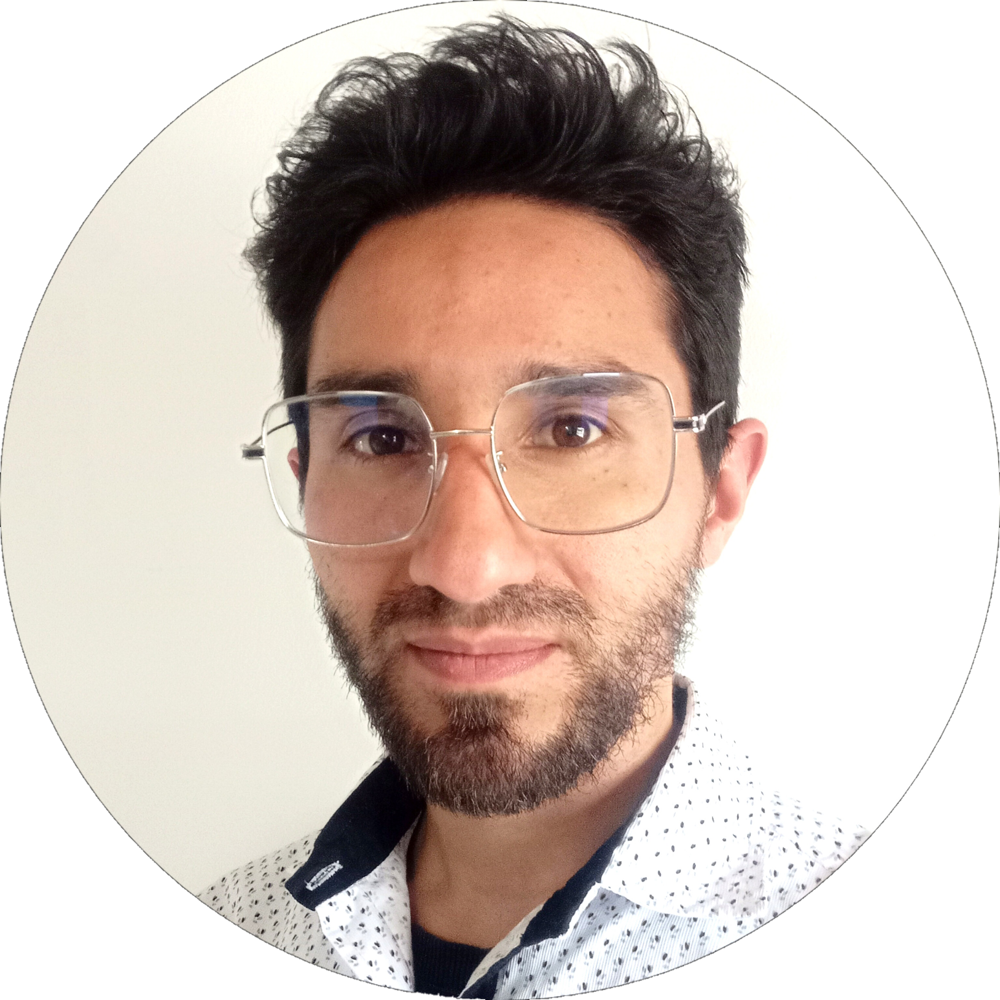

Soy David Rincon
 Sobre miTengo 28 años de edad, antes de decidir entrar al mundo de la tecnoligia, me dedicaba a la mecanica de motocicletas de alto cilindraje, siempre me llamo la atención todos esos componentes electronicos que interactuaban entre si para manejar una cosa u otra. me encantaba cuando tenia que hacer diagnostico de alguno de ellos, seguir cables, revisar los planos y descubrir el porque de la falla, a veces eran complicadas pero entre mas lo era más gratificante se volvía encontrar la solución. Me gustan los retos grandes porque pienso que es la unica manera en la que podemos crecer, tengo la filosofia de que mañana tenemos que ser mejor que hoy lo cual me trajo a donde estoy, llevo casi un año aprendiendo de programación porque quiero poner mi grano de arena en la solución de probelamas con herramientas tecnologicas, me encanta aprender cosas nuevas y compartirlas.